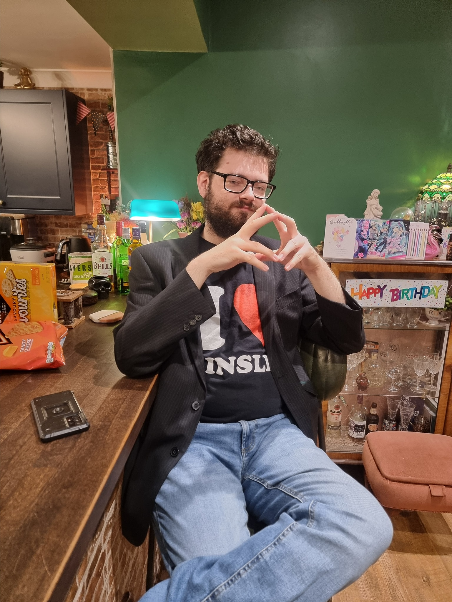

Welcome Message
Welcome, traveller, to I ♥ Comic Sans, the personal blog site of Johnny Strange. Here, you will find a wonderful assortment of curious media and marvellous creations, all made or curated by the amazing Johnny Strange.
Please note that for convenience, some of the functionality of this website was designed by my dear old friend, Microsoft Copilot. Rest assured, however, that all writing, music, and artwork featured on this site is 100% Human, and 100% Johnny Strange.
Johnny Strange, Our Dear Leader:
